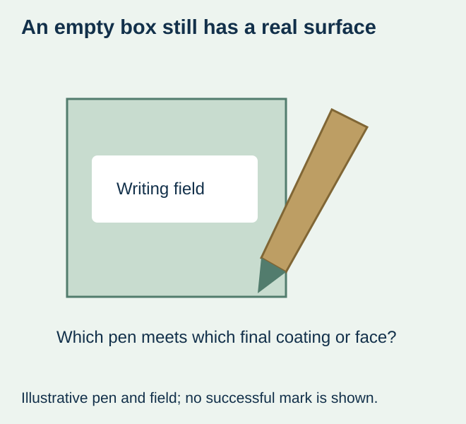
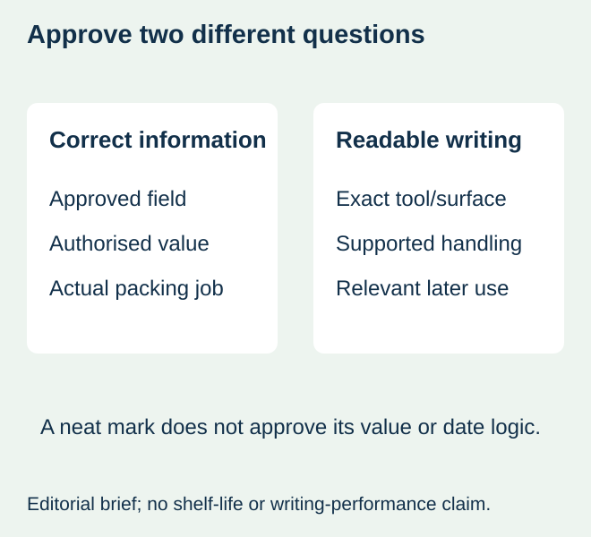

A small food brand reserves a white rectangle for a date and orders its usual protective finish. At the packing table, the chosen pen does not leave the expected mark on that surface. The box is empty in the artwork, but the actual label carries a coating or laminate over it.
Specify the writing tool and the final supplied surface together before selecting a writable label. An unprinted area is not automatically a pen-compatible area. Ask for an identified combination and evaluate the real mark through the relevant handling rather than rely on the words matte, paper or permanent.


Name what the pen actually touches
Identify the face material, any preprint and the final coating or laminate at the writing field. A clear finish remains a physical surface even when the rectangle looks white. Record the exact pen or marker reference, not only its ink colour or a broad category copied from another pack.
Sttark’s writing-on-labels guidance distinguishes writing on its unlaminated paper from its matte-laminated material and recommends different tools, including markers for the latter. It does not support treating every pen or every matte surface as interchangeable. These are another printer’s product recommendations, not a compatibility result for the label proposed here.
Choose a combination, then inspect the relevant result
| Situation | Direct purchasing response | What is still unproved |
|---|---|---|
| Actual stock and pen are identified | Request the supplier’s applicable advice and representative writing sample | Performance through the pack’s later handling |
| Only the finish name is known | Ask for the actual material/finish reference before selecting the pen | That a similar-looking sample represents the order |
| Ballpoint or gel pen is required by the operation | State that constraint in the inquiry and compare supported surfaces | That a marker-only recommendation satisfies the job |
| The chosen pen fails on the current surface | Compare an identified compatible surface or another approved marking route | That changing the package adhesive fixes the mark |


Use the actual field and the actual packing task
Provide the final-size field and representative permitted values. The content owner should define the wording, value and interpretation. The date-and-lot handoff guide handles that separate information decision; this article does not assign shelf life, choose a legal date category or approve a handwritten field for every sales market.
Have the operation use its normal approved writing procedure on an identified finished sample. Record whether the field is practical to complete and whether the intended information remains readable. A neat sample written slowly on a flat desk may not represent the actual package, gloves, position or packing work.
Follow the relevant supplier instructions for the particular tool and surface before handling the mark. This guide provides no universal drying interval or waiting time. If the actual sequence does not allow the supported handling requirement, compare another confirmed combination or a different marking route rather than describe the first sample as production-ready.
Separate initial writing from later use
A mark that is readable immediately after writing has not automatically been evaluated after chilling, condensation, wiping or the actual contact with adjacent packaging. Ask which of those conditions matter for the food pack and which the sample represents. Keep appearance, legibility and package attachment as separate observations.
For a hypothetical refrigerated jar project, a sample may be written on an unused flat label while the later process adds the value to an already applied label. Record the difference. If relevant, compare the supported actual sequence on the intended package. Do not introduce an unapproved solvent, heating step or food-process change to force a writing result.
Price a writable feature as an actual supply requirement
A request for an uncoated or differently finished field can affect the construction or finishing mask. Ask what the supplier actually proposes, how the field is identified and which sample represents it. A universally untreated patch is not prescribed: the actual surface and tool need to be supported together.
If handwriting creates an unsuitable workload or an unresolved durability question, compare an offered preprinted or supported variable-marking route on the same content and package requirement. Do not assume a new printer is necessary or that a pen is always cheaper when the real work and acceptance are unknown.
Keep the accepted tool and surface visible on reorders
Record the approved material, finish, field and writing tool with the actual observations. If a pen, coating or label stock changes, ask whether that combination still represents the order. A clear batch value on a new pen/surface pair should not silently inherit the previous approval.
The thermal-overprint guide addresses a ribbon-based interface; it does not qualify handwriting. The useful outcome here is a confirmed manual-writing combination and practical handling boundary. This site does not promise a writable grade, specific pen compatibility or a durable date result without project confirmation.
Discuss the unresolved label requirement
Send the exact writing tool or its reference, current or proposed face and finish, final-size writing field, real package and the handling the mark must withstand. Include quantities and identify whether the inquiry concerns printed labels with a write-on area or another marking route. Review the food-label product scope and prepare a label specification inquiry. The contact page opens an email draft and lists email or WhatsApp for attachments. Supply, proof options, testing, pricing and timing require project confirmation.